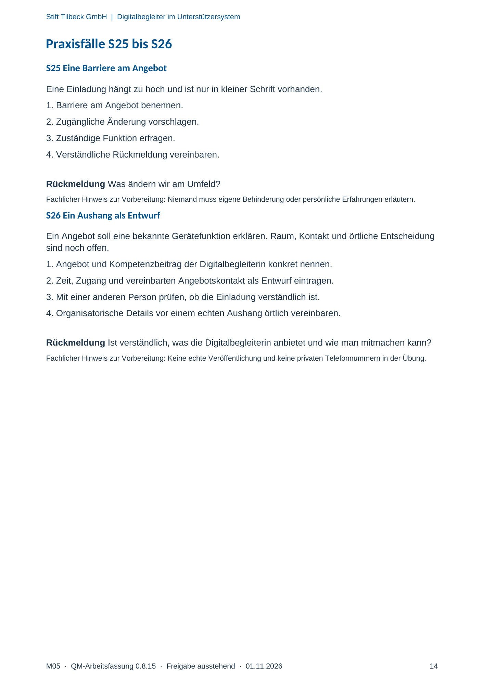

M05 · Originalseite 14
Ein Aushang als Entwurf
Original-Druckseite mit S26. Auf derselben Seite stehen außerdem S25. Diese sind dadurch keine zusätzliche Aufgabe.
Fragen und Ankreuzfelder werden auf dem Ausdruck bearbeitet. Die Lesefassung speichert keine Antworten.
Lesefassung · Seite 14
Stift Tilbeck GmbH | Digitalbegleiter im Unterstützersystem
Praxisfälle S25 bis S26
S25 Eine Barriere am Angebot
Eine Einladung hängt zu hoch und ist nur in kleiner Schrift vorhanden.
1. Barriere am Angebot benennen.
2. Zugängliche Änderung vorschlagen.
3. Zuständige Funktion erfragen.
4. Verständliche Rückmeldung vereinbaren.
Rückmeldung Was ändern wir am Umfeld?
Fachlicher Hinweis zur Vorbereitung: Niemand muss eigene Behinderung oder persönliche Erfahrungen erläutern.
S26 Ein Aushang als Entwurf
Ein Angebot soll eine bekannte Gerätefunktion erklären. Raum, Kontakt und örtliche Entscheidung
sind noch offen.
1. Angebot und Kompetenzbeitrag der Digitalbegleiterin konkret nennen.
2. Zeit, Zugang und vereinbarten Angebotskontakt als Entwurf eintragen.
3. Mit einer anderen Person prüfen, ob die Einladung verständlich ist.
4. Organisatorische Details vor einem echten Aushang örtlich vereinbaren.
Rückmeldung Ist verständlich, was die Digitalbegleiterin anbietet und wie man mitmachen kann?
Fachlicher Hinweis zur Vorbereitung: Keine echte Veröffentlichung und keine privaten Telefonnummern in der Übung.
Originalseite ansehen
